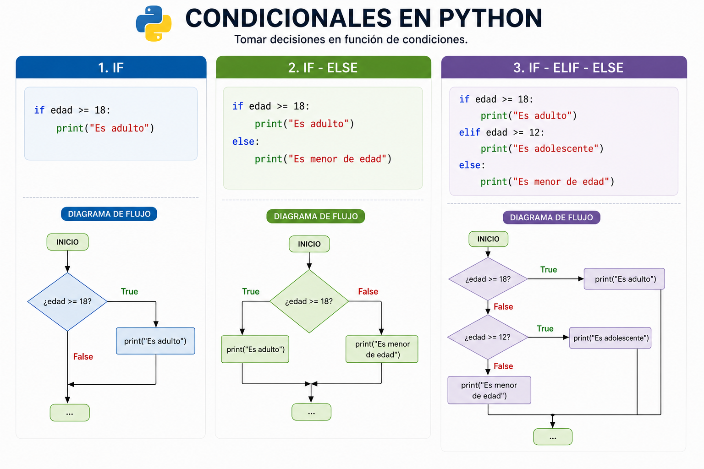

Tema 2: Componentes del Lenguaje y Control de Flujo
2.1. Scripts de Python vs. Ejecución interactiva
En el Tema 1 se presentó la sesión interactiva de Python (REPL), útil para explorar y probar ideas al vuelo. En la práctica, sin embargo, la mayor parte del trabajo real se realiza mediante scripts: archivos de texto con extensión .py que contienen un programa completo, pensado para ejecutarse de principio a fin.
2.1.1 La sesión interactiva (REPL)
La sesión interactiva permite ejecutar instrucciones una a una y ver el resultado de inmediato:
>>> 2 + 3
5
>>> x = 10
>>> x * x
100Es ideal para explorar la sintaxis, comprobar el comportamiento de una función o hacer cálculos rápidos. Pero tiene una limitación fundamental: el código no se guarda. Al cerrar la sesión, todo el trabajo desaparece.
En el entorno de desarrollo integrado (IDE) Visual Studio Code, la sesión interactiva se puede abrir desde la terminal con el comando python. Para terminar la sesión se puede usar exit().
2.1.2 Scripts .py
Un script de Python es un archivo de texto con extensión .py que contiene instrucciones Python que se ejecutan secuencialmente. A diferencia del REPL, un script se guarda en disco, puede reutilizarse en cualquier momento, compartirse con otras personas y ejecutarse en distintos entornos.
2.1.3 Notebooks: Jupyter y Marimo
Los notebooks son un formato intermedio que combina características del REPL y los scripts. Un notebook se divide en celdas que pueden ejecutarse de forma individual y en cualquier orden; el estado (variables, importaciones) persiste entre celdas durante la sesión, y el archivo se guarda con el código y sus salidas. Además, las celdas pueden contener texto enriquecido en Markdown, ecuaciones en LaTeX o gráficos, lo que los convierte en una herramienta natural para comunicar resultados junto al código que los produce.
Jupyter Notebook es el formato más extendido en ciencia de datos e investigación. Sus archivos tienen extensión .ipynb y pueden ejecutarse en el navegador, en VS Code o en plataformas como Google Colab. El principal inconveniente de Jupyter es que el orden de ejecución de las celdas es libre, lo que puede generar estados inconsistentes difíciles de depurar.
Marimo es una alternativa más reciente y reactiva: las celdas declaran sus dependencias explícitamente, de modo que si se modifica una variable todas las celdas que la usan se recalculan automáticamente. Esto elimina los problemas de estado inconsistente y hace que un notebook de Marimo sea siempre reproducible de arriba abajo, como un script.
2.2. Variables y sus tipos
2.2.1 Variables
Tenemos entonces que en Python una variable es un nombre que referencia un valor de cierto tipo almacenado en memoria. En Python las variables no tienen un tipo fijo, pueden referenciar valores de cualquier tipo, y pueden cambiar de tipo a lo largo de la ejecución.
La asignación de un valor a una variable (en Python, un enlace de nombre o name binding en inglés) se realiza con el operador =. A diferencia de otros lenguajes, = no copia un valor en una celda de memoria: hace que el nombre de la izquierda quede apuntando al objeto producido por la expresión de la derecha. Por ejemplo:
x = 42 # x referencia el entero 42
print(x) # 42
x = 3.14 # ahora x referencia el flotante 3.14
print(x) # 3.14
x = "hola" # ahora x referencia la cadena "hola"
print(x) # holaPython admite asignación múltiple en una sola línea:
La función print() puede recibir varias variables como argumentos, separadas por comas, y las imprime en la salida estándar (normalmente la terminal). Más adelante se verá que print() tiene parámetros opcionales para controlar el formato de salida.
2.2.2 Nombres de variables
Los nombres de variables solo pueden contener letras, dígitos y el guión bajo _, y no pueden comenzar por un dígito ni coincidir con una palabra reservada del lenguaje (if, for, while, True, False, None, etc.).
2.3 Tipos integrados (built-in) simples
Los tipos integrados (o built-in types) en Python son los tipos de datos fundamentales que vienen integrados en el lenguaje, sin necesidad de importar ninguna librería externa. Python tiene seis tipos built-in para representar valores simples:
| Tipo | Clase Python | Ejemplos | Descripción |
|---|---|---|---|
| Entero | int |
0, 42, -7, 10**100 |
Precisión arbitraria; no hay desbordamiento. |
| Flotante | float |
3.14, -0.5, 1.0e-10 |
IEEE 754 doble precisión (~15 dígitos significativos). |
| Número complejo | complex |
3 + 2j, 1j, complex(2, -1) |
La unidad imaginaria se escribe j (no i como en matemáticas). |
| Cadena | str |
"hola", 'mundo' |
Secuencia inmutable de caracteres Unicode. |
| Booleano | bool |
True, False |
Subtipo de int; True == 1 y False == 0. |
| Nulo | NoneType |
None |
Representa la ausencia de valor. |
Para averiguar el tipo de cualquier objeto o variable se usa la función built-in type(). Para mostrar valores en la salida estándar se usa la función built-in print().
2.3.1 Enteros (int)
En Python, los enteros tienen precisión arbitraria: pueden ser tan grandes como la memoria disponible lo permita, sin que se produzca desbordamiento (overflow). Esto los distingue de muchos otros lenguajes donde los números enteros están limitados a un rango fijo.
Hay cuatro formas de escribir literales enteros, según la base numérica:
Además, para mejorar la legibilidad de números grandes se puede usar el guión bajo _ como separador visual (equivalente al punto en notación europea):
2.3.2 Flotantes (float)
Los flotantes siguen el estándar IEEE 754 de doble precisión, que representa números reales con aproximadamente 15-17 dígitos significativos. Esto implica que no todos los números decimales se pueden representar exactamente en binario:
Los literales float admiten varias notaciones:
Al igual que en int, se puede usar _ como separador visual:
Un detalle relevante para matemáticos: a diferencia de los enteros, los float tienen rango finito. El mayor valor representable es aproximadamente \(1.8 \times 10^{308}\); superarlo produce inf:
2.3.3 Números complejos (complex)
Python incorpora los números complejos como tipo nativo, sin necesidad de importar ninguna librería. La unidad imaginaria se denota con j (no i, para evitar conflicto con el uso de i como índice en código):
Los números complejos ilustran bien un concepto central en Python: los objetos tienen atributos y métodos a los que se accede con el operador punto .:
- Un atributo es un valor asociado al objeto:
z.realyz.imagdevuelven las partes real e imaginaria del número complejoz. - Un método es una función asociada al objeto que se invoca con paréntesis:
z.conjugate()devuelve el conjugado.
Esta notación objeto.algo aparecerá constantemente en Python. En el Tema 5 se estudiará en detalle qué son los objetos y cómo se definen; por ahora basta con saber que todo valor en Python es un objeto y que el punto . da acceso a lo que ese objeto “sabe hacer”.
Los atributos .real e .imag devuelven siempre float. Las operaciones aritméticas (+, -, *, /, **) funcionan directamente entre complejos o entre complejos y enteros/flotantes.
La función built-in abs() devuelve el módulo de un número complejo, que es la distancia al origen en el plano complejo. El módulo se calcula como \(\sqrt{x^2 + y^2}\) para un complejo \(z = x + yi\). La función abs() también funciona con enteros y flotantes, devolviendo su valor absoluto.
Un literal complex se forma combinando con + o - un literal int o float como parte real y un literal int o float seguido de j como parte imaginaria. La parte imaginaria es obligatoria; un literal como 3 o 2.5 es un int o float, no un complex.
2.3.4 Cadenas (str)
Las cadenas (o cadenas de caracteres) son secuencias de caracteres delimitadas por comillas simples o dobles (ambas equivalentes). Para cadenas que ocupan varias líneas se usan triples comillas:
Las secuencias de escape permiten incluir caracteres especiales dentro de una cadena:
| Secuencia | Carácter |
|---|---|
\n |
Salto de línea |
\t |
Tabulador horizontal |
\\ |
Barra invertida literal |
\" |
Comilla doble literal |
Con la notación objeto.método(), explicada en la sección de números complejos, podemos acceder a diversos métodos útiles de las cadenas. Por ejemplo:
Aquí upper es un método de la variable texto (objeto del tipo str). El punto . es el operador de acceso a miembros: indica “busca dentro de este objeto algo llamado upper y llámalo”.
Los métodos de str más útiles en la práctica:
| Método | Descripción | Ejemplo |
|---|---|---|
.upper() |
Convierte a mayúsculas | "hola".upper() → "HOLA" |
.lower() |
Convierte a minúsculas | "HOLA".lower() → "hola" |
.strip() |
Elimina espacios al inicio y al final | " hola ".strip() → "hola" |
.replace(a, b) |
Sustituye todas las ocurrencias de a por b |
"aabbcc".replace("b", "x") → "aaxxcc" |
.split(sep) |
Divide la cadena por sep y devuelve una lista |
"a,b,c".split(",") → ["a", "b", "c"] |
.startswith(s) |
True si la cadena empieza por s |
"hola".startswith("ho") → True |
.count(s) |
Cuenta las ocurrencias de s |
"banana".count("a") → 3 |
La función len() no es un método sino una función built-in, pero se aplica habitualmente sobre cadenas:
2.3.5 Booleanos (bool)
Los booleanos representan valores de verdad: True o False. Son el resultado natural de los operadores de comparación y lógicos (se verán más adelante):
El tipo bool es un subtipo de int: True vale 1 y False vale 0. Esto permite usarlos directamente en expresiones aritméticas, algo que en matemáticas tiene sentido como función indicadora:
2.3.6 Nulo (NoneType)
None es el único valor del tipo NoneType y representa la ausencia de valor. Se usa cuando una variable no tiene ningún objeto asignado, o cuando una función no devuelve nada explícitamente:
Para comprobar si una variable es None se usa is, no ==:
2.4 Operadores aritméticos, de comparación (relacionales) y lógicos
Python define siete operadores aritméticos que funcionan principalmente con enteros, flotantes y complejos (int, float, complex). La tabla siguiente resume su significado y comportamiento:
| Operador | Operación | Ejemplo | Resultado |
|---|---|---|---|
+ |
Suma | 7 + 3 |
10 |
- |
Resta | 7 - 3 |
4 |
* |
Producto | 7 * 3 |
21 |
/ |
División real | 7 / 3 |
2.3333… |
// |
División entera | 7 // 3 |
2 |
% |
Módulo (resto) | 7 % 3 |
1 |
** |
Potencia | 2 ** 10 |
1024 |
Algunas excepciones y extensiones de estos operadores según el tipo de dato son:
complexno admite//ni%, ya que la división entera y el módulo no están definidos para números complejos.bool, al ser subtipo deint, hereda todos los operadores aritméticos.stradmite+como concatenación y*como repetición, pero no el resto.
Para los tipos numéricos, cuando se combinan operandos de tipos distintos el resultado se promueve al tipo más general. Por ejemplo, int + float produce float, y int + complex produce complex.
La potencia ** admite exponentes negativos y flotantes, pero el resultado es siempre float o complex. Es además el único operador con asociatividad por la derecha: 2 ** 3 ** 2 se evalúa como 2 ** 9 = 512.
Para la división tenemos dos operadores distintos: / y //. El primero devuelve un flotante, mientras que el segundo devuelve el cociente entero (floor division). El operador % devuelve el resto (el módulo) de la división entera.
2.4.1 Operadores de asignación compuesta
Los operadores de asignación compuesta combinan una operación aritmética con la asignación, actualizando la variable en el lugar:
2.4.2 Operadores de comparación (relacionales)
Los operadores de comparación o relacionales son fundamentales para el control de flujo condicional: sin ellos no hay forma de que un programa tome decisiones. Constituyen la base del mecanismo que dota a un programa de adaptabilidad: en lugar de ejecutar siempre la misma secuencia de instrucciones, el programa examina el estado de los datos en tiempo de ejecución y elige el camino a seguir en consecuencia.
Los operadores de comparación evalúan una relación entre dos valores y devuelven un booleano (True o False):
| Operador | Significado | Ejemplo | Resultado |
|---|---|---|---|
== |
Igual a | 3 == 3 |
True |
!= |
Distinto de | 3 != 4 |
True |
< |
Menor que | 2 < 5 |
True |
> |
Mayor que | 5 > 2 |
True |
<= |
Menor o igual | 3 <= 3 |
True |
>= |
Mayor o igual | 4 >= 5 |
False |
Los operadores de comparación se aplican a todos los tipos simples, con dos excepciones importantes:
complexno admite<,>,<=,>=: los números complejos no tienen orden total, igual que en matemáticas. Solo==y!=están definidos.strusa orden lexicográfico: las comparaciones de orden siguen el código Unicode de cada carácter, no el orden alfabético intuitivo. En particular, todas las mayúsculas preceden a todas las minúsculas:"Z" < "a"esTrue.
Python permite encadenar comparaciones de forma natural, exactamente como en notación matemática:
2.4.3 Operadores lógicos
Los operadores lógicos (and, or, not) permiten construir condiciones compuestas (expresiones lógicas) combinando expresiones booleanas simples como las que se obtienen utilizando los operadores de comparación. Sin ellos, cada condición estaría limitada a comparar un único par de valores; con ellos es posible expresar restricciones arbitrariamente complejas sobre el estado del programa. En matemáticas son el equivalente directo de los conectivos proposicionales \(\wedge\), \(\vee\) y \(\neg\) de la lógica matemática.
| Operador | Significado | Resultado True cuando… |
|---|---|---|
and |
Conjunción | ambos operandos son True |
or |
Disyunción | al menos uno es True |
not |
Negación | el operando es False |
2.4.4 Conversión de tipos
Python no convierte tipos automáticamente en la mayoría de situaciones. Las funciones int(), float(), str() y bool() permiten convertir valores de forma explícita:
La conversión de tipos es necesaria porque Python no realiza conversiones implícitas entre tipos incompatibles —a diferencia de otros lenguajes— y porque los datos del mundo real llegan frecuentemente en un tipo distinto al que requiere el cálculo.
Las situaciones que la justifican son principalmente tres:
Entrada de usuario:
input()devuelve siemprestr. Cualquier dato numérico introducido por el usuario debe convertirse explícitamente antes de operar con él:int(input(...))ofloat(input(...))(se verá en la sección 2.5. abajo).Precisión aritmética: a veces se necesita forzar el tipo del resultado.
int(3.9)trunca a3;float(7)asegura que una división posterior no sea entera.Compatibilidad entre tipos:
str(42)permite concatenar un número con una cadena; sin la conversión,"El resultado es: " + 42lanzaTypeError.
2.5. Control de Flujo — Estructuras o Sentencias Condicionales
El control de flujo es el mecanismo que determina el orden en el que se evalúan las instrucciones de un programa. Aunque por defecto la ejecución sigue una secuencia estrictamente lineal, las estructuras de control permiten alterar esta trayectoria: bifurcar la ejecución en función de una premisa lógica, o iterar repetidamente sobre un bloque de código. En este marco, las estructuras condicionales actúan como la herramienta fundamental para la toma de decisiones.
La estructura condicional en Python es if, que admite tres formas:
ifsolo: ejecuta un bloque si la condición es verdadera, y no hace nada si es falsa.if-else: añade un bloque alternativo para cuando la condición es falsa.if-elif-else: encadena múltiples condiciones mutuamente excluyentes, evaluadas en orden hasta que una sea verdadera.

2.5.1 Estructura if
La forma más simple es el if:
El bloque indentado solo se ejecuta si la condición es True. Si la condición es False, el bloque se omite y la ejecución continúa en la siguiente instrucción no indentada.
2.5.2 Estructura if-else
2.5.3 Estructura if-elif-else
Para varias condiciones mutuamente excluyentes se encadenan ramas elif (else if). Solo se ejecuta la primera rama cuya condición sea True; las demás se ignoran:
2.5.4 Condicionales anidados y expresión condicional
Un bloque if puede contener otro if en su interior. Los condicionales anidados permiten refinar la lógica paso a paso:
Cuando la lógica se complica, suele ser preferible combinar condiciones con and y or, o usar elif, en lugar de anidar demasiados niveles.
2.6. Control de Flujo — Iteraciones
La iteración es el mecanismo que permite repetir un bloque de instrucciones un número determinado de veces o mientras se cumpla una condición. Sin iteración, un programa solo podría procesar una cantidad fija de datos conocida en tiempo de escritura; con iteración puede operar sobre colecciones de tamaño arbitrario, aproximar resultados mediante sucesiones o series, y ejecutar procesos que convergen a una solución.
En matemáticas la iteración tiene equivalentes directos en la notación de sumatorio \(\sum\), productorio \(\prod\) y en la definición de sucesiones por recurrencia. Python proporciona dos estructuras iterativas fundamentales: while, que repite mientras una condición sea verdadera, y for, que recorre los elementos de una secuencia.
2.6.1 El bucle while (iteración indefinida o condicional)
El bucle while repite un bloque de instrucciones mientras una condición sea verdadera. ERepresenta el concepto clásico de las ciencias de la computación donde la ejecución de un bloque de código depende del estado actual del programa. Se le llama “indefinido” porque el número de repeticiones puede ser desconocido al iniciar el bucle.
- Fundamento: Se basa exclusivamente en la evaluación de una expresión booleana (la condición).
- Mecanismo: Antes de entrar al ciclo y al inicio de cada repetición posterior, el intérprete evalúa la condición. Si el resultado es
True, el bloque de código se ejecuta. Si esFalse, el flujo salta a la primera instrucción que esté fuera del bucle. - Teoría del estado: Para que un bucle
whilesea teóricamente seguro, el estado del programa debe cambiar dentro del bloque. Si el estado nunca altera la condición de evaluación, se produce un bucle infinito.
while condición:
# bloque que se repiteUsos típicos del bucle while
Usos típicos del bucle while incluyen:
Repetir hasta que se cumpla una condición — búsqueda del primer múltiplo:
Aproximación iterativa — método de bisección (vea (Wikipedia contributors 2024a)) para encontrar una raíz:
Convergencia de una sucesión — iterar el método de Newton (vea (Wikipedia contributors 2024b)) hasta que dos términos consecutivos sean indistinguibles:
Validación de entrada — repetir hasta obtener un valor válido (la función
input()se verá en la sección 2.5):n = int(input("Introduce un entero positivo: ")) while n <= 0: n = int(input("Debe ser positivo. Inténtalo de nuevo: "))Dígitos de un número — procesar cifra a cifra:
Instrucciones break y continue
Dentro de cualquier bucle, dos instrucciones permiten modificar el flujo de iteración:
break: interrumpe el bucle inmediatamente y salta al código que viene después.continue: salta al inicio de la siguiente iteración, omitiendo el resto del bloque actual.
Diseño correcto de un bucle while
Para que un bucle while funcione de forma correcta y predecible hay que atender cinco aspectos:
- Inicialización: todas las variables de la condición deben estar definidas antes de la primera evaluación.
- Variante de bucle: una expresión entera que decrece estrictamente en cada iteración y está acotada inferiormente, garantizando que el bucle termina. Su existencia prueba que el algoritmo no es infinito.
- Invariante de bucle: una propiedad lógica que es verdadera antes de la primera iteración y se mantiene verdadera al final de cada una. Su preservación garantiza que el bucle calcula lo que se pretende calcular.
- Casos límite: la condición debe manejar de forma segura valores extremos o nulos para evitar errores en tiempo de ejecución.
breakycontinuecon moderación: su abuso rompe el flujo de entrada y salida única, dificultando la lectura y el razonamiento sobre el código.
La variante y el invariante de bucle son las herramientas teóricas fundamentales del razonamiento formal sobre bucles. La variante garantiza que el bucle termina; el invariante garantiza que calcula lo correcto.Si se puede exhibir una variante y un invariante válidos, se ha probado rigurosamente que el bucle termina y que su resultado es el esperado.
2.6.2 El bucle for (iteración definida) y el objeto range()
El bucle for en Python itera sobre los elementos de una secuencia, por ello se dice que es una iteración definida. Este es un caso donde Python difiere conceptualmente de lenguajes como C o C++. En esos lenguajes, un for suele ser un while disfrazado con un contador numérico (ej. for(i=0; i<10; i++)).
En Python, el for es en realidad un bucle “for-each” (para cada elemento). Su base no es una condición matemática, sino el consumo sistemático de los elementos de un objeto iterable. Un objeto iterable es cualquier objeto que puede entregar sus elementos de uno en uno en un orden definido y sobre el que se puede usar un bucle for.
El ejemplo más inmediato de objeto iterable son los objetos de la clase range. Mediante objetos range se generan secuencias de enteros que constituyen la forma habitual de controlar el número de repeticiones en un bucle for.
El tipo range() genera secuencias de enteros de las tres formas siguientes:
| Llamada | Secuencia generada |
|---|---|
range(n) |
0, 1, 2, …, n−1 |
range(a, b) |
a, a+1, …, b−1 |
range(a, b, paso) |
a, a+paso, a+2·paso, … mientras el valor sea < b |
Entre los usos fundamentales del bucle for se encuentra el patrón acumulador, que permite calcular sumas, productos y otras operaciones agregadas de manera eficiente.
Otros usos comunes del bucle for incluyen:
Recorrer y procesar una secuencia:
Búsqueda — detectar si un entero en un rango cumple una condición:
Ejemplos matemáticos de uso del bucle for
2.6.3 Iteración sobre cadenas y enumerate()
Una cadena str es un iterable cuyos elementos son los caracteres individuales (cada uno a su vez un str de longitud 1). El bucle for puede entonces recorrer directamente los caracteres de una cadena:
Si se desea conocer la posición de cada carácter, se puede usar range() con len():
Otra forma de obtener la posición de cada carácter es usar el tipo enumerate(). Al igual que range, enumerate es un tipo built-in de Python. Con enumerate(iterable) se produce un objeto iterable de pares (índice, valor) generados de forma perezosa. Con indice se obtiene la posición del elemento en la secuencia, y con valor se obtiene el elemento en sí. Esto permite recorrer una cadena (o cualquier iterable) y conocer simultáneamente el índice de cada elemento:
Las cadenas que se inician con f y contienen expresiones entre llaves {} se llaman f-strings (cadenas formateadas). Se verán en la sección 2.5.2.
2.7. Entrada y salida básicas: flujos entre teclado y pantalla
La interacción entre el programa y el usuario es fundamental en cualquier aplicación. Python proporciona dos funciones built-in para la entrada y salida básicas de datos: print() para mostrar información en la terminal e input() para leer texto introducido por el usuario. Aunque simples, estas dos funciones son suficientes para construir programas interactivos completos y constituyen la base sobre la que se asienta cualquier interfaz de texto.
2.7.1 La función print()
Ya vimos anteriormente que print() escribe en la salida estándar (la pantalla en condiciones normales). Acepta cualquier número de argumentos separados por comas:
2.7.2 Cadenas formateadas: f-strings
Las f-strings (cadenas formateadas) son la forma más moderna, legible y rápida de insertar variables y expresiones dentro de cadenas de texto en Python. Se escriben con el prefijo f (o F) justo antes de las comillas (simples o dobles) y emplean llaves {} para indicar dónde se debe inyectar el valor de una variable o una expresión.
La verdadera ventaja de las f-strings no es solo insertar variables estáticas; permiten ejecutar código Python válido directamente dentro de las llaves. Es posible hacer cálculos matemáticos, llamar a métodos o usar funciones sin necesidad de crear variables temporales previas.
A partir de Python 3.8 se puede añadir un signo igual = después del nombre de la variable (o expresión) dentro de las llaves. Esto imprime tanto el nombre de la variable como su valor resultante, lo que ahorra mucho tiempo al hacer depuración (debugging) con print().
2.7.3 La función input()
input() detiene la ejecución del programa, muestra un mensaje opcional en pantalla y espera a que el usuario escriba algo y pulse Intro. Siempre devuelve una cadena de texto (str), independientemente de lo que el usuario haya escrito.
texto = input("Escribe algo: ")
print(f"Escribiste: {texto}")
print(type(texto)) # <class 'str'>Para trabajar con valores numéricos, hay que convertir la cadena devuelta por input():
n = int(input("Introduce un número entero: "))
print(f"El cuadrado de {n} es {n**2}.")
x = float(input("Introduce un número real: "))
print(f"Su raíz cuadrada es {x**0.5:.6f}.")Para probar los ejemplos de uso de la función input(), es necesario ejecutar el código en un entorno que soporte la entrada interactiva, como un IDE (Visual Studio Code local o en un Codespace de GitHub) que permita la interacción con el usuario. En entornos de ejecución no interactivos, como algunos notebooks o plataformas en línea, la función input() puede no funcionar correctamente.
Por ello para los ejemplos anteriores con input():
- genere un fichero de Python
test_input.py, - copie el código en los ejemplos y peguelo en ese fichero,
- ejecútelo para ver la interacción en la terminal.
Para hacer este proceso más cómodo ya está disponible un repositorio plantilla con el fichero test_input.py integrado. Aquí tenéis el enlace:
https://github.com/UIB-23200-Programacion/ejercicios-tema-2/generate
Una vez allí:
- En Repository Name dé un nombre al repositorio que incluya vuestro nombre (por ejemplo: ejercicios-tema-2-NombreApellido).
- Opcionalmente, agregue una descripción en Description (por ejemplo: Ejercicios del tema 2).
- Baje hasta ver el botón verde Create repository y haga clic en él. Esto creará un repositorio nuevo en su cuenta de GitHub con el contenido del repositorio plantilla.
- Una vez creado, haced clic en <> Code, después en Codespaces y seleccionad Create codespace on main
- Espere a que se configure el entorno de desarrollo, abra el fichero
test_input.pyy ejecute el código para probar la interacción coninput().